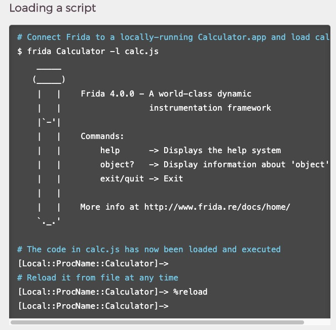
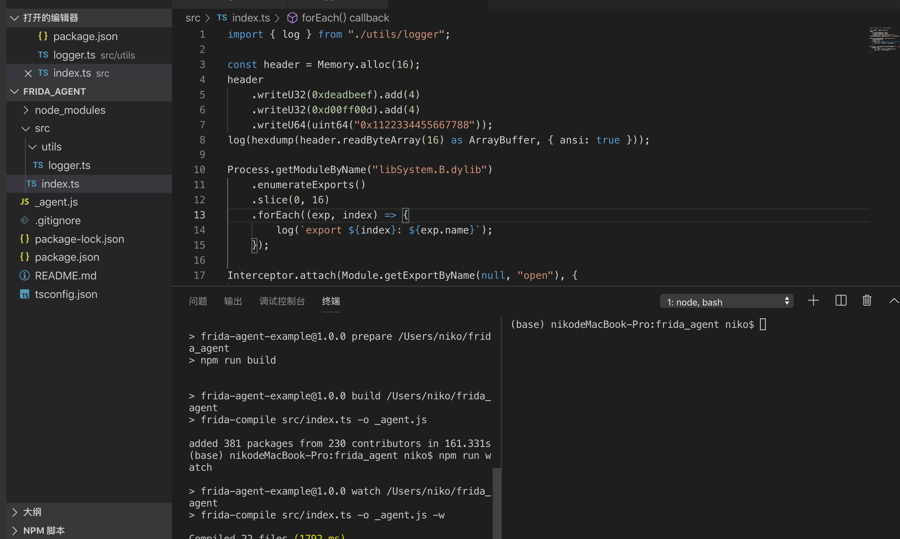

当我刚开始写frida脚本时, 会用python binding的方式去写，比如以下代码
1 | import frida |
这种写法是官方文档提供的，代码的核心在于 js code 部分，显然，在py里写js的代码相对来说不够友好。后来我就想了一个办法，把js代码单独放到js文件编写，python代码每次读入
js文件，这样我就可以按需执行不同的js即可。
后来，当我重新看frida官方文档的时候，又发现了frida这个命令，它可以代替掉python桩程序，直接运行js文件。直到现在我一直使用着这种方式。

当我frida用久了之后，我发现了很多重复的代码，整个js文件又长又难看，就想着把这个重复的代码单独拿出来，放到一个utils文件中，这样我每次要用到一些公共函数的时候，直接调用utils中的方法
就可以了。但我并没有找到比较优雅的方式去解决这个问题。
当我再次查看官方文档的时候，我发现 frida 提供了一个TypeScript的接口，它正好提供了一个模块化开发的思路，同时还带来了很多惊喜，参考链接。
在使用TypeScript开发的过程中，我感觉和原生的 js 并没有太大的区别，不过，使用vscode，多了很多代码补全，省去了一部分查文档的时间。
使用上非常的简单，基本就是按照文档走一遍流程
1 | git clone git://github.com/oleavr/frida-agent-example.git |
然后就可以愉快的玩耍了。当然首先你需要有个npm。

新的方式优点很多，比如自动不全，语法检查，模块化开发，缺点也有一些，比如编译时间会稍微长一点，我这里基本要1秒，同时编译出来的js文件也会比较大。
旧的方式使用简单，写完js就可以用，方便测试，但是没有语法检查，自动补全其实也挺麻烦的
typescript虽然弥补了javascript的一些缺陷，但因为进入了type，也给开发带来了一定的坑，以下是我目前遇到的一些坑，希望对你有一定的帮助。
遇到的第一个坑是toString。 toString是内置的一个函数，但是如果我们的目标函数名也是toString的时候，那就会导致a.toString 被识别成一个string对象，显然在js里string 是没有implementation这个属性的，所以编译就会不通过。
1 | let a =Java.use('xxx') |
咨询了一下我前端的同学，得到了2中解决方法
第一种，使用@ts-ignore ，表示下一行代码按原生代码解析，因为原生js是可以这么写的，编译自然也能通过
1 | let a =Java.use('xxx') |
第二种 使用 as any,表示转换成any 类型
一种写法
1 | var k = Java.use('x') as any |
另一种写法
1 | var k = Java.use('x') |
js 中 implementation 后的function的参数可以随便写，不受约束，但是typescript 里就不一样了，因为ts本身就是为了type 而存在的，那么参数的类型就省不了，于是就可能写成一下样子。这么写的坏处就是，写的内容太多了，效率反而低了，好在这个也有解决方法。
1 | const class1 = Java.use('X.7C5') |
解决方案： 使用 ..args: any[] 代替参数，然后用数组下表访问成员
1 | class1.method1.implementation = function(...args: any[]){ |
想用别人写好的base64 模块，然后npm install 之后无法使用，后来发现是少导入主代码了
“@types/js-base64”: “^2.3.1”,// 这个主要是定义了一些typescript 的导出定义，只有一个声明
“js-base64”: “^2.5.2” // 这个是主代码，可以给node ，browser等使用
从工程化的角度看，typescript + frida + vscode还是很有优势的, 推荐大家尝试一下。
最后欢迎关注公众号获取最新文章